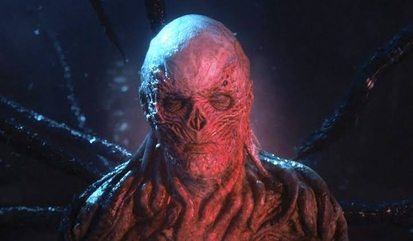
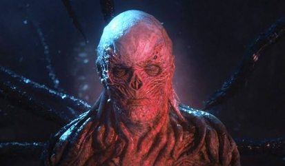

Történet
A Stranger Things egy 1983-ban játszódó sci-fi horror sorozat, melyben Hawkins, egy látszólag átlagos amerikai kisváros, sötét kormányzati kísérletek központjává válik. A laborban egy titkos program során olyan gyerekeket képeznek ki, akik pszichokinetikus és telepatikus képességekkel bírnak.
A történet akkor indul be igazán, amikor eltűnik egy helyi fiú,
Will Byers. Barátai a keresése közben találkoznak egy különös,
kopasz lánnyal, akit csak Elevennek hívnak. Eleven nemcsak beszélni
nem nagyon tud, de olyan erő rejlik benne, amely egy másik dimenzió,
a „Fejjel Lefelé” kapuit is képes megnyitni.
A „Fejjel Lefelé” egy torz, sötét, párhuzamos valóság, ahol egy
félelmetes ragadozó – a Demogorgon – vadászik. Miközben a város
felnőttjei és gyerekei próbálják megérteni, mi történik, egyre
világosabbá válik: Hawkinsben sosem volt minden rendben, és a kapu
kinyílása csak a kezdet.

 
